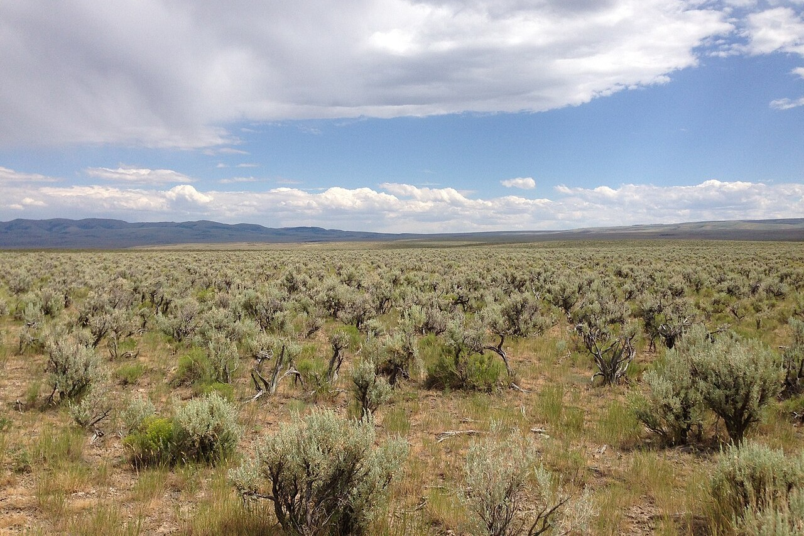
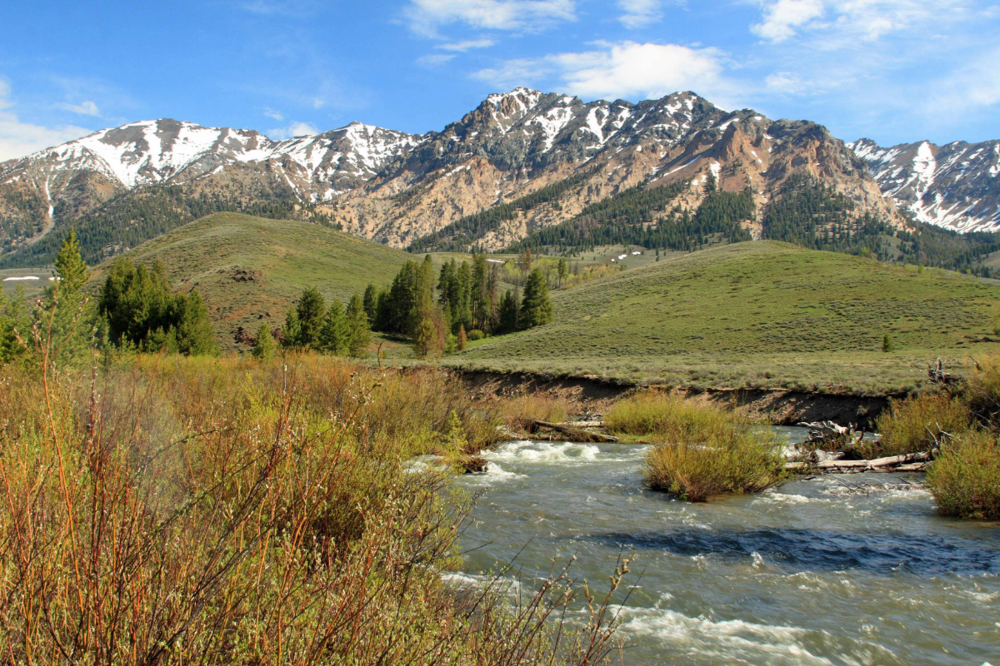
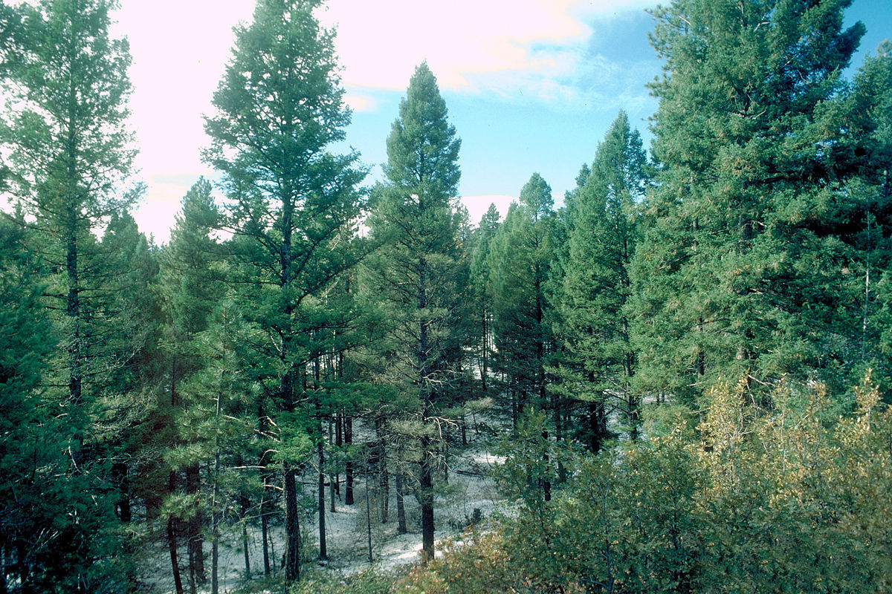

Ecoregions
Southern Idaho (Snake River Plains)

In the lower elevations of Idaho, we often see brush steppe ecosystems, which include a variety of shrubs, grasses, and wildflowers that are adapted to arid conditions. Some of the species found in these areas include sagebrush, bitterbrush, and rabbitbrush. Along Idaho’s rivers and streams, we often find vegetation such as willows, cottonwoods, and sedges.
Central Idaho (mountainous)

Central Idaho, with its numerous streams and canyons, houses in the higher elevations forest-trees such as western larch and Douglas fir. The lower elevations of the region are home to meadows surrounded by Ponderosa pine and lodgepole pine.
North Idaho Panhandle (forest, prairie, mountains)

Northern Idaho is a rugged region largely made up of forest-trees such as Grand fir, Douglas fir, subalpine fir, Engelmann spruce, lodgepole pine, and ponderosa pine. We can also find western red cedar, showing the close proximity of the region to the maritime climate of the Pacific Coast.